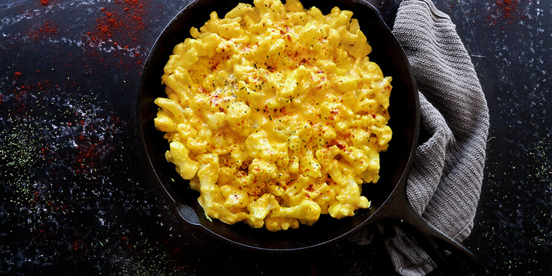

Back
Cauliflower Mac + Cheese
Ingredients
- 2 pounds frozen cauliflower florets
- 1 cup heavy whipping cream
- 4 ounces cream cheese, cubed
- 8 ounces cheddar cheese, shredded
- 1 teaspoon turmeric (for the bright color)
- ½ teaspoon powdered garlic (optional)
- Salt and pepper to taste

Instructions
- Cook the cauliflower florets according to the package instructions.
- Bring the cream to a simmer. Use a whisk to stir in the cream cheese and mix until smooth.
- Stir in 6 ounces of the shredded cheddar cheese. Save the other 2 ounces for later. Mix until the cheese melts into the sauce.
- Add the turmeric, powdered garlic, salt, and pepper. The sauce will become a smooth yellow color.
- Make sure that the cauliflower is drained, then add it to the cheese sauce. Evenly coat the florets with sauce.
- Sprinkle on the remaining 2 ounces of cheddar cheese, then stir until mostly melted.
Source